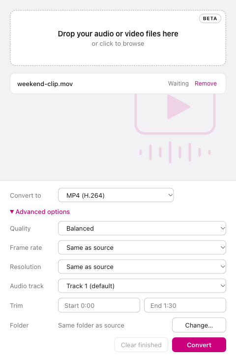

Fast
Convert local media files without leaving your desktop environment or relying on a remote service.
Convert MP4, MP3, WebM, and GIF on macOS and Windows with an open-source FFmpeg desktop app. Your media stays on your computer: no cloud uploads, no account required.
Convert local media files without leaving your desktop environment or relying on a remote service.
Choose a target format and focus on the result instead of complicated conversion settings.
Your files stay on your machine, helping protect content and reduce workflow friction.

Drop in one or several videos or audio files from your device or folders.
Pick the output format and adjust the settings to match your target device or workflow.
Run the conversion locally and keep the finished files ready for reuse.
Public beta for macOS Apple Silicon, macOS Intel, and Windows x64. macOS builds are not notarized; Windows builds are unsigned. Read the release notes before installing.
MP4 and MKV with H.264, WebM with VP9, MP3, AAC/M4A, WAV, FLAC, OGG Vorbis, and animated GIF. Selected device presets also support HEVC/H.265. Input compatibility depends on your FFmpeg build.
Yes. Once installed, Kinoshift processes your media locally without a conversion account. Add multiple files to the queue; jobs run one at a time. No media uploads are required.
Kinoshift est un convertisseur vidéo et audio libre pour Mac et Windows. Convertissez en MP4, MP3, WebM ou GIF sans téléverser vos fichiers. L’interface et l’aide existent en français et en anglais.
Find Kinoshift useful? Star the project on GitHub, share your experience, or report a bug to help improve the beta.